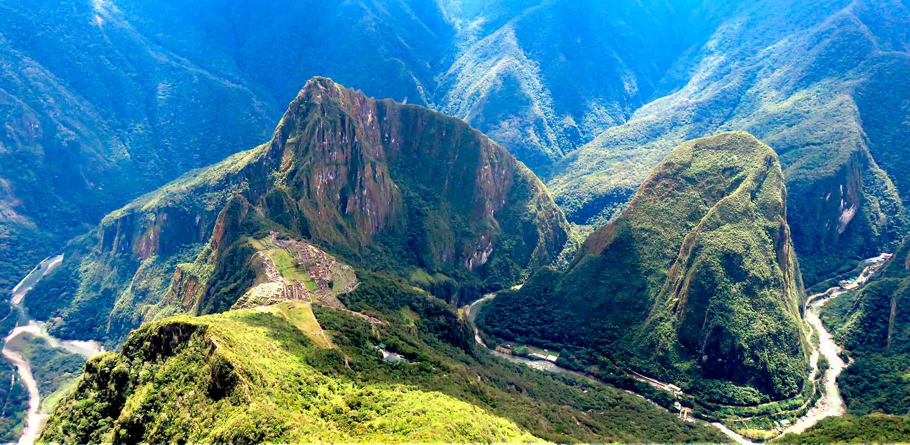

PASEO POR MACHUPICCHU
Machu Picchu («Montaña Vieja») es el nombre contemporáneo que se da a una llaqta —antiguo poblado andino— incaica construida antes del siglo XV en el promontorio rocoso que une las montañas Machu Picchu, Putucusi y Huayna Picchu en la vertiente oriental de la cordillera Central, al sur del Perú y a 2490 msnm, altitud de su plaza principal. Su nombre original habría sido Llaqtapata.